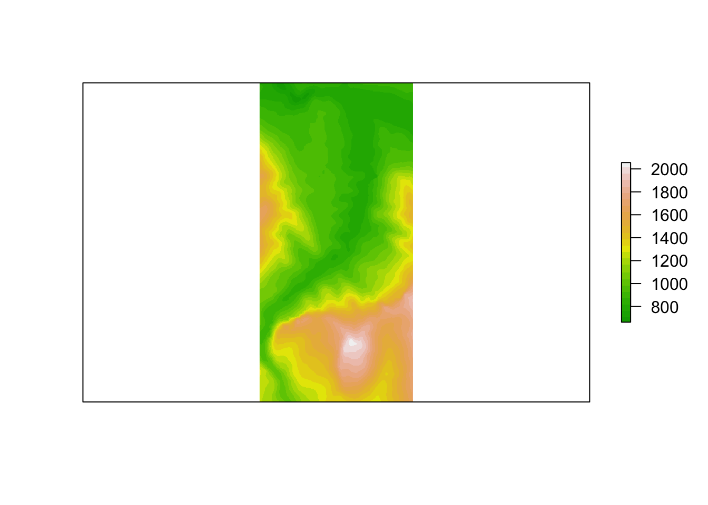
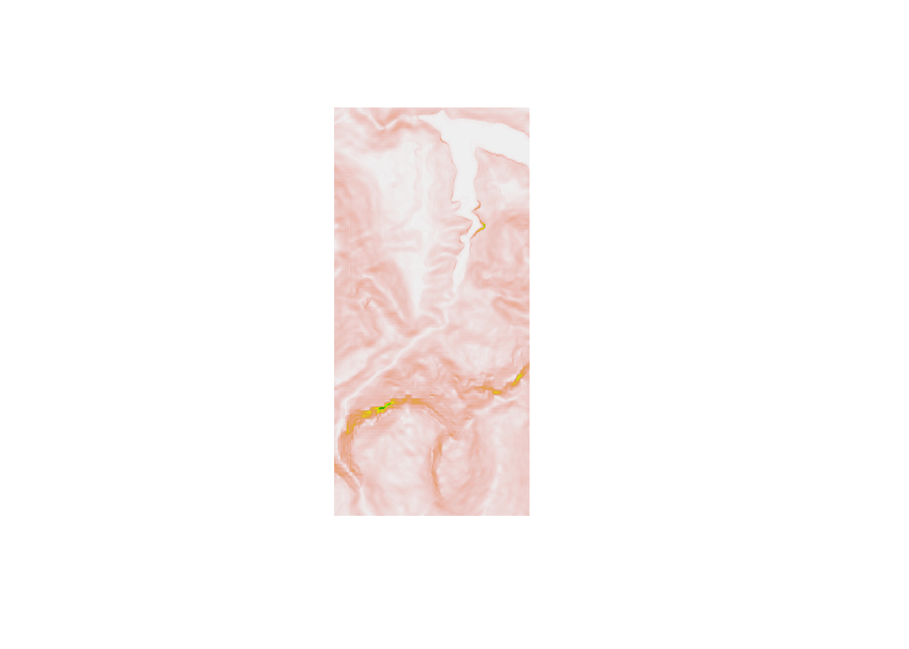
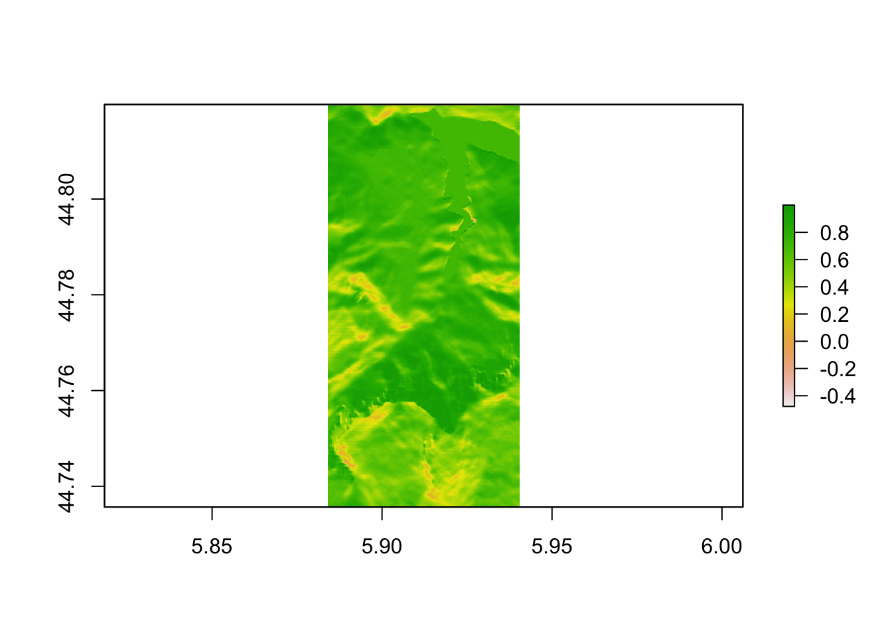
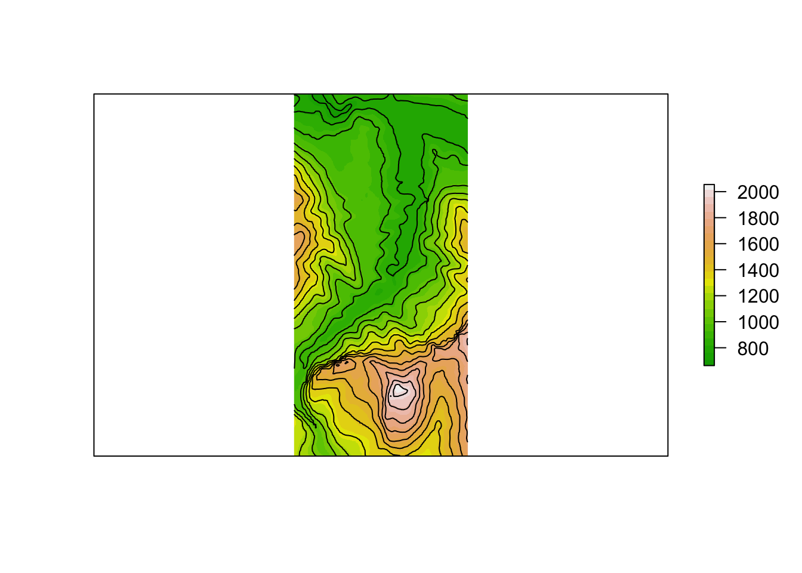
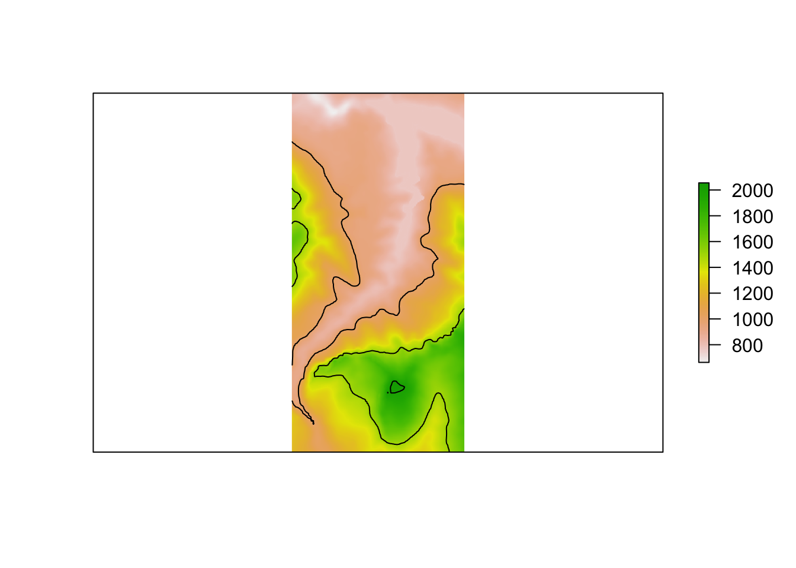
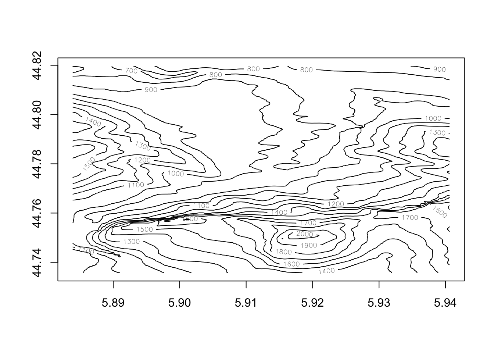
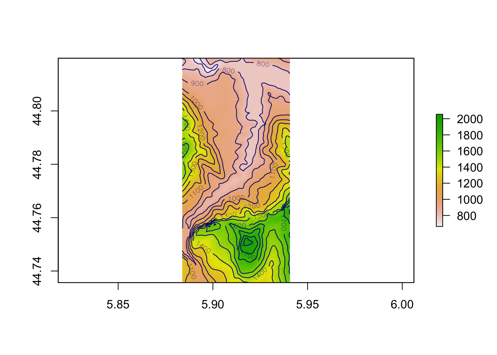

8 Determining Terrain Features from Raster Data
Based on the elevation data associated with a raster image, we can depict the raster image in various ways. For example, we can select different colour plots to colour the tiles, as well as adding contour lines.
8.1 Load in Base Data
As ever, let’s load in our stage data:
geojson_filename = 'montecarlo_2021.geojson'
geojson_sf = sf::st_read(geojson_filename)## Reading layer `montecarlo_2021' from data source `/Users/tonyhirst/Documents/GitHub/visualising-rally-stages/montecarlo_2021.geojson' using driver `GeoJSON'
## Simple feature collection with 9 features and 2 fields
## geometry type: LINESTRING
## dimension: XY
## bbox: xmin: 5.243488 ymin: 43.87633 xmax: 6.951953 ymax: 44.81973
## geographic CRS: WGS 84And also load in the elevation data raster:
library(raster)
library(rayshader)
# Previously downloaded TIF digital elevation model (DEM) file
stage_tif = "stage_elevation.tif"
# Load in the previously saved image raster
elev_img = raster(stage_tif)
auto_zscale = geoviz::raster_zscale(elev_img)
# Note we can pass in a file name or a raster object
elmat = raster_to_matrix(stage_tif)8.2 Rendering Terrain Over Raster Images
By default, a plot of a raster image will render a colour mapping sensitive to elevation:
plot(elev_img, col = terrain.colors(25), axes=FALSE)
As well as height / elevation information, we can also extract additional information from the raster image using the raster::terrain() function. This function can compute various terrain characteristics from a raster with elevation data, ideally in a projected (planar) raster data image with units in meters.
Terrain features include aspect, slope and flowdir (the direction of water flow as determined by the direction in which the greatest drop in elevation (or smallest rise) is to be found at any given point). TPI (Topographic Position Index, “the difference between the value of a cell and the mean value of its 8 surrounding cells”), TRI* (Terrain Ruggedness Index, “the mean of the absolute differences between the value of a cell and the value of its 8 surrounding cells”) and roughness (“the difference in elevation between the maximum and the minimum value of a cell and its 8 surrounding cells”) terrain measures are also supported:
plot(terrain(elev_img, "TRI"),
# Remove legends, bounding box etc
bty="n", box=FALSE, axes=F, frame.plot=F, legend=F)
To give the appearance of relief as highlighted by shadow, we can shade the terrain using the the raster::hillshade() function with slope and aspect values determined by the raster::terrain()` function:
hill_shadows = hillShade(slope = terrain(elev_img, "slope"),
aspect = terrain(elev_img, "aspect"),
# azimuthal direction of sun in degrees:
angle = 45,
add=TRUE)
plot(hill_shadows)
8.3 Adding Contours to raster Images
Consider again our original raster image, plotted here using a “terrain style” colour palette:
plot(elev_img, col = terrain.colors(25), axes=FALSE)
We can use the raster::rasterToContour function to generate a set of contour lines over the raster:
# Plot the original raster image
plot(elev_img, col = terrain.colors(25), axes=FALSE)
# Add a contour plot over the raster image
plot (rasterToContour(elev_img), add=TRUE)
#nlevels - number of contour levels desired iff levels is not supplied.
#levels - numeric vector of levels at which to draw contour lines.We have a certain amount of control over the contours that are plotted, notably through the following two parameters that can be passed through the rasterToContour() function to the grDevices::contourLines function [docs] that actually generates the contour lines:
nlevels: the number of contour levels desired ifflevelsis not supplied;levels: a numeric vector of levels at which to draw the contour lines.
So for example, let’s set the contour lines to appear at elevations of 1000m and 1500m:
# Plot the original raster image
plot(elev_img, axes=FALSE)
# Add a contour plot over the raster image
plot(rasterToContour(elev_img, levels=c(1000, 1500)), add=TRUE) Alternatively, we may choose to let “the algorithm” decide the levels whilst we still determine how many contour levels there are to be:
Alternatively, we may choose to let “the algorithm” decide the levels whilst we still determine how many contour levels there are to be:
# Plot the original raster image
plot(elev_img, axes=FALSE)
# Add a contour plot over the raster image
plot (rasterToContour(elev_img, nlevels=4),
add=TRUE)
Another raster package function, raster::contour, produces a contour plot with labeled contour values:
contour(elev_img)
Again, we can overplot this on the original raster image, optionally setting the contour line color:
plot(elev_img)
contour(elev_img, add=TRUE, col='navyblue')